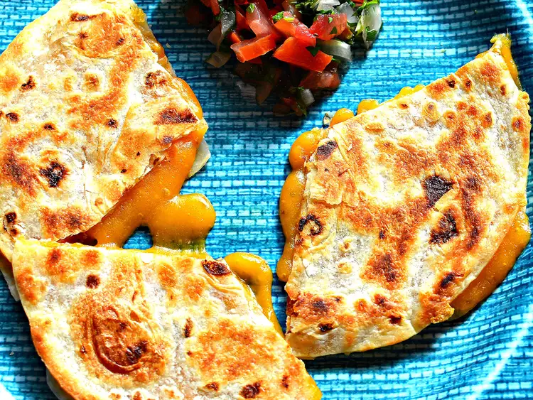

Quesadilla Recipe

Ingredients
- Shredded Cheddar cheese
- Tortilla
- Avocado oil or Olive oil
Step-by-step Recipe
- Turn stove to medium heat
- Place flat pan on stove
- Oil up the pan with your choice of Avocado oil or olive oil
- Put Tortilla on pan
- Put Cheddar on Tortilla
- Use a spatula to flip the quesadilla when needed
- Cook both sides to desired crispiness
Back to recipes